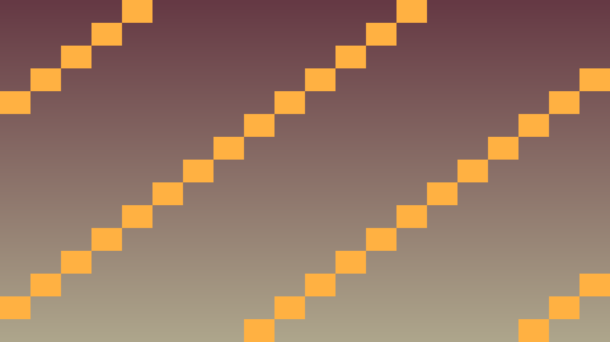
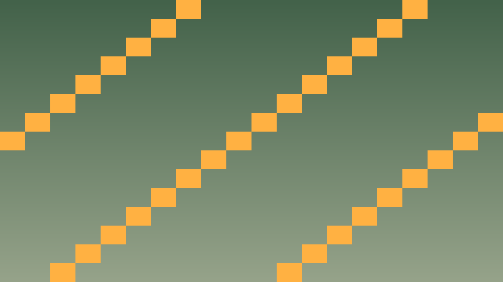

3.6 Noslēguma project (projekts): Klases turnīra simulator (simulators)
Stundas uzdevums: Apvienot OOP (objektorientētā programmēšana), signal (signālus), struct (struktūra) un C# script (skriptus) pilnvērtīgā rundām balstītā klases turnīra simulation (simulācijā).
80 min plāns: Ievads un kritēriju pārruna (~10 min) · 1. uzdevums (~20 min) - saliec komandu un šķēršļus · 2. uzdevums (~25 min) - uzraksti vienas kārtas logic (loģiku) · 3. uzdevums (~20 min) - pievieno turnīra loop (ciklu) un rezultātu · Iesniegšana (~5 min).
Pirms sāc: šis ir 3. tēmas noslēguma project (projekts). Izmanto visu apgūto: class (klases), inheritance (mantošanu), signal (signālus), Inspector (īpašību panelis) property (īpašības) un struct (struktūra). Sāc ar vienu kārtu, tikai tad taisi loop (ciklu).
Teorija: Simulator (simulatora) apraksts
Rundām balstīta klases turnīra simulation (simulācija) ar trim spēlētāja dalībniekiem (Captain, Presenter, TimeKeeper) pret nejauši ģenerētiem šķēršļiem (PrinterQueue, WifiDrop, MissingMarker).
Turnīra plūsma:
- Turnīra sākumā izvēlies 3 dalībnieku komandu.
- Šķēršļi tiek ģenerēti.
- Katras kārtas: spēlētājs izvēlas darbību (izvēlēties gājienu, prezentācijas bonusu, atjaunot enerģiju).
- Pēc tam šķēršļi samazina komandas enerģiju.
- Raundi turpinās, līdz viena puse pabeigusi visus gājienus.
Class hierarchy (klašu hierarhija): Participant (base (bāzes klase)) → Captain, Presenter, TimeKeeper; Obstacle (base (bāzes klase)) → PrinterQueue, WifiDrop, MissingMarker.
Kā šo izmantot project (projektā)
Atceries: ar redzamu efektu editor (redaktorā) nepietiek. Paskaidro, kura C# class (klase) glabā state (stāvokli), kura method (metode) to maina un kā Godot node (mezgls) structure (struktūra) izmanto šo code (kodu).
Pārbaudi: katrai būtiskai turnīra lomai ir C# class (klase) vienā .cs file (failā), ar constructor (konstruktoriem), method (metodēm), signal (signāliem) vai inheritance (mantošanu).
public class OopCheckpoint
{
public string Lesson = "3.6 Noslēguma projekts: Klases turnīra simulators";
public bool UsesCSharp = true;
public bool HasScriptFile = true;
public bool HasSingleResponsibility = true;
public bool UsesGodotInspector = true;
}Praktiskie uzdevumi
1. uzdevums -
Saliec komandu un šķēršļus
Beigās tev būs trīs dalībnieki un trīs šķēršļi, gatavi turnīram.
- Izveido C# class (klasi)
TournamentManager, kas manto noNode(mezgls). - Pievieno tai
private List<Participant> party = new();unprivate List<Obstacle> obstacles = new();. - Pievieno komandai pa vienam
Captain,PresenterunTimeKeeperobject (objektam). - Pievieno šķēršļu list (sarakstam) trīs dažādus
Obstaclemezglus. - Izdrukā
_Ready()method (metodē) visu dalībnieku un šķēršļu nosaukumus. - Būvē un palaid, lai pārbaudītu abus list (sarakstus).
- Pārliecinies, ka neviens list (saraksts) nav tukšs.
Gatavs, kad: Output (izvade) panel (panelī) izdrukājas trīs dalībnieki un trīs šķēršļi ar saviem nosaukumiem.
2. uzdevums -
Uzraksti vienas kārtas logic (loģiku)
Beigās viena turnīra kārta samazinās enerģiju pareizajiem object (objektiem).
- Uzraksti method (metodi)
private void PlayTurn(). - Izvēlies tajā nejaušu šķērsli ar
(int)GD.RandRange(0, obstacles.Count - 1). - Izvēlies nejaušu dalībnieku no komandas.
- Izsauc dalībniekam
ApplyPenaltyar šķēršļa spēku. - Izdrukā, kurš šķērslis kuram dalībniekam iedarbojās un cik enerģijas palika.
- Izsauc method (metodi) trīs reizes un pārbaudi output (izdrukas).
- Pārbaudi, ka katra loma sodu izcieš atšķirīgi.
Gatavs, kad: katrā kārtā izdrukājas cits šķērslis un dalībnieks, un kapteinis zaudē mazāk nekā pārējie.
3. uzdevums -
Pievieno turnīra loop (ciklu) un rezultātu
Beigās turnīrs noskaidros uzvarētāju pats.
- Uzraksti loop (ciklu), kas izsauc
PlayTurn(), kamēr aktīvi vismaz divi dalībnieki. - Pieslēdzies katra dalībnieka signal (signālam)
Finishedno 3.3 stundas. - Izdrukā paziņojumu, kad kāds dalībnieks izstājas.
- Saskaiti kārtu skaitu ar field (lauku)
private int currentTurn = 0;. - Izdrukā beigās uzvarētāja vārdu un kopējo kārtu skaitu.
- Palaid simulation (simulāciju) trīs reizes un pieraksti rezultātus.
- Veic commit (izmaiņu fiksējums) un push (nosūtīšana uz attālo krātuvi).
Gatavs, kad: trīs palaišanas reizēs uzvar dažādi dalībnieki, un loop (cikls) vienmēr beidzas, nevis griežas bezgalīgi.
Papildu uzdevums - Parādi turnīru uz screen (ekrāna)
Ja pamatdarbs ir gatavs, pārcel output (izdrukas) no Output (izvade) uz spēles window (logu).
- Pievieno scene (scēnai)
Label(teksta etiķete) node (mezglu) katram dalībniekam. - Atjaunini tajos enerģijas value (vērtību) pēc katras kārtas.
- Pievieno vienu
Label(teksta etiķete) event (notikumu) žurnālam. - Pievieno button (pogu), kas izpilda vienu kārtu.
- Izspēlē turnīru, spiežot button (pogu), nevis palaižot loop (ciklu).
Gatavs, kad: turnīru var izspēlēt ar button (pogu), un enerģijas value (vērtības) uz screen (ekrāna) mainās pēc katras kārtas.
Ko sagatavo
Stundas mērķis: Tev ir strādājošs klases turnīra simulator (simulators): trīs dalībnieku lomas ar atšķirīgu uzvedību, trīs šķēršļi, kārtu loop (cikls) ar signal (signāliem) par izstāšanos un izdrukāts uzvarētājs ar kārtu skaitu.
GitHub repository (krātuvē) jābūt:
- Viss project (projekts) ar C# script (skriptiem), scene (scēnām) un project (projekta) file (failiem).
- Screenshot (ekrānuzņēmums) ar Output (izvade) panel (paneli), kurā redzama vismaz viena pilna turnīra norise līdz uzvarētājam.
- File (faili)
TournamentManager.cs,Participant.csun vismaz vienas lomas class (klase). - README.md: trīs palaišanas reižu rezultāti un viens teikums par to, kāpēc rezultāti atšķiras.
Kā iesniedz: Veic commit (izmaiņu fiksējums) un push (nosūtīšana uz attālo krātuvi). Skolotāja norādītajā vietā ievieto tikai GitHub repository (krātuves) link (saiti); visiem prasītajiem file (failiem), README.md pierakstiem un pierādījumiem jābūt pašā repository (krātuvē).
Biežākās kļūdas
- Object (objekti) dublējas: pārbaudi, vai
partyunobstaclesnetiek aizpildīti vairākas reizes. - UI (lietotāja saskarne) nesinhronizējas: pieslēdz signal (signālus) vienā vietā un pēc katras kārtas atjaunini visas enerģijas joslas.
- Turnīrs nebeidzas: pārbaudi beigu condition (nosacījumu) - aktīvo dalībnieku skaitam jāsamazinās, kad kāds izstājas.
Godot screenshot (ekrānuzņēmumi)


Code sample (koda piemērs) (paplašināts)
using Godot;
using System.Collections.Generic;
public partial class TournamentManager : Node
{
[Signal] public delegate void TournamentWonEventHandler();
private readonly List<Participant> party = new();
private readonly List<Obstacle> obstacles = new();
private int currentTurn = 0;
public void StartTournament()
{
foreach (Obstacle obstacle in obstacles)
{
obstacle.Finished += OnObstacleFinished;
}
NextTurn();
}
public void ExecuteFocus(Participant participant, Obstacle target)
{
int penalty = participant.GetStats().GetTotalFocus();
target.ApplyPenalty(penalty);
if (obstacles.Count == 0) EmitSignal(SignalName.TournamentWon);
else NextTurn();
}
private void OnObstacleFinished()
{
// Atrod un noņem pabeigto šķērsli
obstacles.RemoveAll(obstacle => !obstacle.IsActive());
}
private void NextTurn()
{
currentTurn++;
}
}